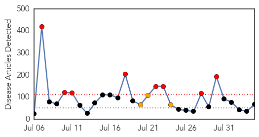
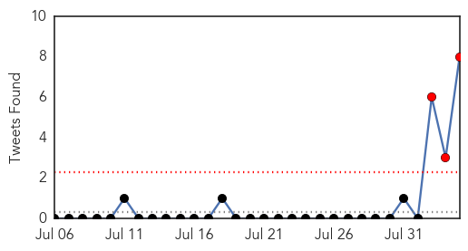
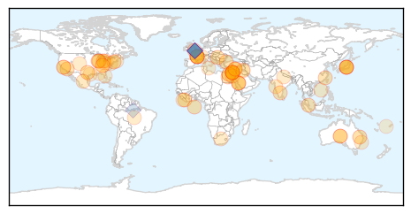
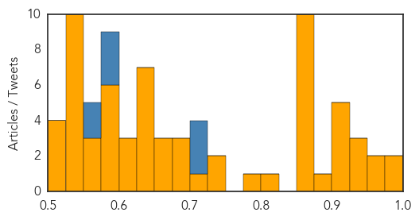

Toggle navigation
Early Warning
Daily Alerts
Unknown
Aug 04, 2014
Compare to:
-
Dengue Fever
Hemmorhagic Fever
Mold/Fungal Infection
Influenza
Meningitis
Pertussis / Whooping Cough
Middle East Respiratory Syndrome
Cholera
Hepatitis
Chikungunya
Yellow Fever
Bubonic Plague
West Nile Virus
Swine Flu
Ebola
Measles
Mumps
30 Day Trends
Web: 8
alerts
, 3
warnings
Twitter: 3
alerts
, 0
warnings
Top Articles:
Showing top 50 articles...
0.983
Ramadan pilgrimage season in Saudi Arabia mostly free from MERS
0.982
Health officials play down meningococcal outbreak claims after two Australian deaths in 24 hours
0.967
More Chik-V cases confirmed statewide
0.962
10 new cases of Mers coronavirus in Saudi Arabia
0.949
Seven Persons Test Positive for Japanese Encephalitis in Meghalaya
0.933
What is Chagas disease (spread by 'kissing bugs')?
0.926
Meningococcal death on Darling Downs
0.917
Chicago Tribune
0.917
Chicago Tribune
0.917
Chicago Tribune
0.917
Chicago Tribune
0.912
Meningococcal claims first NE victim this year
0.895
Doctors fear growing CRE superbug in hospitals
0.866
SINGAPORE PRESS-Onus on suspected culprits to prove innocence in transboundary haze
0.866
Hamas agrees to Egyptian proposal for 72-hour truce-spokesman
0.866
NYC hospital tests man after travel to Ebola zone in Africa
0.866
Gerber stands outside his neighbor's home that was damaged by a mudflow triggered by flash floods in the San Bernardino mountain community of Forest Falls
0.866
Bertha becomes 2nd hurricane of 2014 Atlantic season
0.866
Lebanese Sunni clerics urge protests over bombardment of Arsal
0.866
PKK militants call for Kurds to rise up against Islamic State
0.866
Lebanese army says 22 soldiers missing, 14 killed
0.866
Lagos records second Ebola case in doctor who treated victim
0.866
China factory blast due to 'dereliction of duty' -safety official
0.823
Bengal encephalitis outbreak: Medical college principal suspended
0.793
Bengal encephalitis outbreak: Medical college principal suspended
0.744
“This Is Not Over Yet,” Says Toledo Mayor Regarding Water Advisory « CBS Detroit
0.727
Ebola latest: Fears of Ebola spreading grow as American doctor catches killer virus
0.717
Texas investigates intestinal illness outbreak
0.699
At least 100 British tourists fall ill at Egyptian resort after sickness bug sweeps through
0.689
Pune landslide: Maharashtra on guard to check for water contamination - India
0.678
UN Warns Of 'Rapidly Unfolding' Health Disaster In Gaza
0.673
Hendra kills - horses must be vaccinated
0.660
How can Africa settle its health bill?
0.657
UN Warns of 'Rapidly Unfolding' Health Disaster in Gaza
0.639
India takes help from US body to tackle encephalitis outbreak
0.635
UN warns of 'rapidly unfolding' health disaster in Gaza
0.635
UN warns of 'rapidly unfolding' health disaster in Gaza
0.635
UN warns of 'rapidly unfolding' health disaster in Gaza
0.635
UN warns of 'rapidly unfolding' health disaster in Gaza
0.635
UN warns of 'rapidly unfolding' health disaster in Gaza
0.635
UN warns of 'rapidly unfolding' health disaster in Gaza
0.614
Dead rabbits lead Jeffco health to test for tularemia
0.609
Second meningococcal death recorded
0.607
WHO statement on the second meeting of the International Health Regulations Emergency Committee concerning the international spread of wild poliovirus - World
0.583
Texas woman fights flesh-eating bacteria
0.579
World Bank pledges $260 million to fight Ebola as crisis worsens
0.579
Israel, Hamas agree to Egypt-brokered truce
0.579
World leaders, royals come together for WWI commemoration
0.579
Stranded in Tunisia, the forgotten refugees of Libya’s 2011 conflict
0.579
ISIS insurgents seize more towns in northern Iraq
Top Tweets:
0.725
Gracias al trabajo de y PQM el aparato Pharmachk que detecta medicamentos deficientes se destacó en Devx2014
0.708
RT: Cada d√≠a en el laboratorio veo algo nuevo üòä Hoy ha tocado el par√°sito de la Malaria en sangre üêõ mencantamitrabajo millones‚Ķ
0.702
RT: La malaria se transmite de persona a persona a travŽs de la picadura de un mosquito Anofeles infectado. viajesventra…
0.594
RT: Entre 12 y 15Mill de personas mueren al año por malaria de esos entre 650k-750k solo en África. Pero claro el ébola ve…
0.589
RT: Este año en comparación con el año anterior hubo una considerable reducción porcentual de 61.50% de casos de malaria. h…
0.581
RT: Un médico de usa enfermo de ébola es noticia mundial sin embargo mueren a diario miles en el mundo por malaria y hasta…
0.553
RT: que bien que andamos Susanita si vos están en situación de malaria el resto estamos joya
0.553
RT: @Mercutio_M El ecologismo tonto mata de millones en millones. Esa misma malaria.
Web/News Articles

Tweets

Article Locations

Article Confidences
